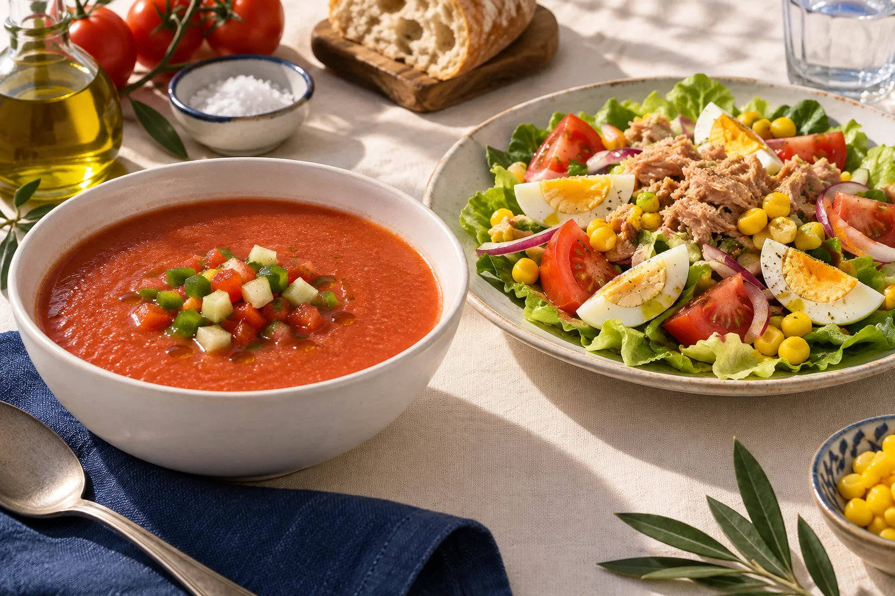
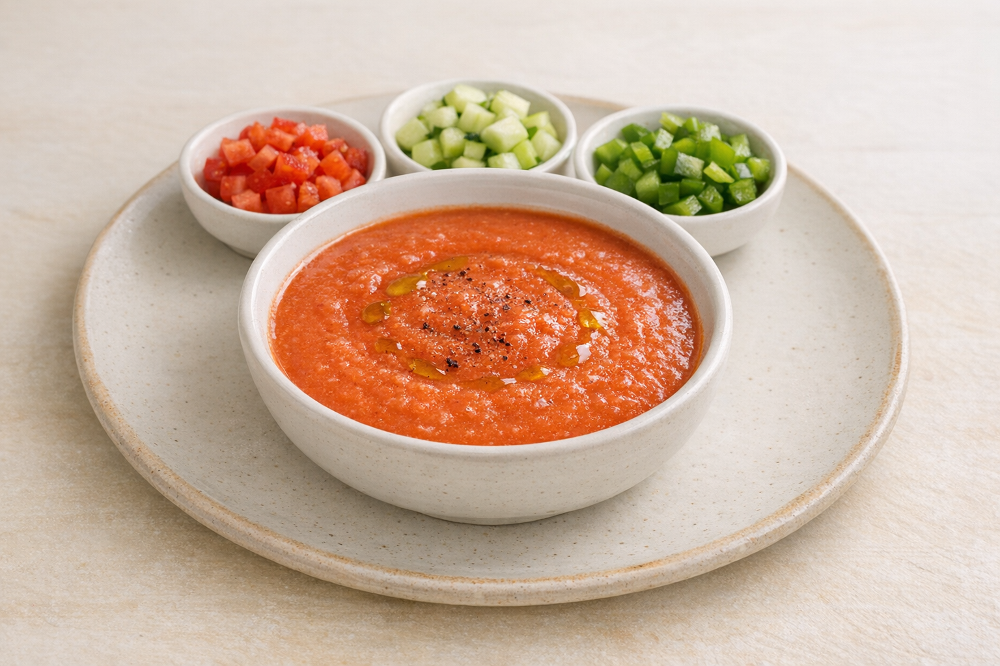

01
Ensaladas
Ensalada Casa Antonio
13.90 €Ensalada queso de cabra y nueces
13.50 €Ensalada de pimientos
10.50 €Ensalada tropical
13.50 €Ensalada César
13.90 €
02
Sopas frías y calientes
Gazpacho con su guarnición
6.00 €Vaso de gazpacho
5.00 €Crema de tomate
8.50 €Sopa de pescados y mariscos
9.50 €Crema de verduras
8.50 €